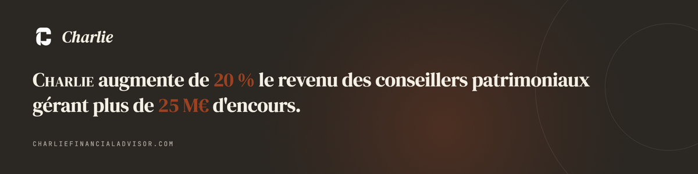

|

|
|
Édition hebdomadaire
Banquiers privés et CGP, repérez vos dossiers à risque avant qu'ils ne deviennent urgents.
Pappers MCP vous aide à détecter les dossiers sensibles avant qu'ils n'escaladent, puis à les classer par urgence. Chaque semaine, il remonte les signaux clés et priorise vos dossiers par niveau de risque.
Objectif : appeler les bons clients, dans le bon ordre, avant le prochain rendez-vous.
|
|
Pappers MCP - connecteur officiel, certifié et daté. Chaque résultat est sourcé, horodaté et exploitable en rendez-vous client ou en comité de suivi.INPI · BODACC · INSEE · DVF · Kbis · RCS
|
|
Connexion · 2 min
Connecter Pappers à Claude
Créez un compte sur pappers.fr (essai gratuit 14 jours), récupérez votre clé API.
|
→ Claude : Settings → Connectors → Add custom connector
→ Nom : Pappers · URL : https://mcp.pappers.fr/VOTRE_CLE
→ Dans vos prompts, écrivez "via Pappers" : accès direct aux registres publics
|
|
|
Routine · 3 étapes
1 |
Constituez votre liste une seule fois
Nom + SIREN + client associé (20 à 50 lignes). Stockez-la dans un Claude Project pour la réutiliser chaque semaine.
|
2 |
Lancez la routine chaque semaine
Copiez-collez le prompt. Les signaux sont triés automatiquement par niveau d'urgence.
|
3 |
Appelez les bons clients en priorité
Traitez les dossiers rouges en premier. Le rapport est exportable au dossier KYC avec source, date et action proposée.
|
|
| Via Pappers, analyse ces entités :
[Entreprise A · SIREN 123456789 · Client Martin]
[Holding Dupont · SIREN 987654321 · Client Dupont]
Pour chaque entité, vérifie :
1. Procédure collective en cours
2. Publications BODACC sur 12 mois
3. Changement dirigeant ou bénéficiaire
4. Bilan annuel non déposé / retard
5. Statut : VERT / ORANGE / ROUGE + action immédiate
Retour attendu : tableau synthèse + top 5 urgences de la semaine, avec source, date et action. |
|
|
Ce que vous décidez en une lecture
|
Rouge
Holding Dupont
SIREN 987654321
Nantissement fonds de commerce (14/04). Bilan 2024 non déposé, retard 3 mois. Deux signaux croisés.
BODACC · INPI · RCS
→ Appel urgent : liquidités et garanties à vérifier
|
|
Orange
SAS Martin Immobilier
SIREN 123456789
Nouveau dirigeant associé depuis le 02/04 (cession 80%). Modification non signalée lors du dernier RDV.
INPI · INSEE
→ Point client obligatoire : mise à jour dossier KYC
|
|
Vert
SCI Les Acacias
SIREN 456789123
RCS à jour. Bilan 2024 déposé le 05/03. Aucune publication BODACC sur 12 mois.
INPI · BODACC
|
|
|
50 clients. Chaque semaine. 10 minutes.
Moins de risques, plus de décisions utiles.
Réserver un call démo de 30 min
|